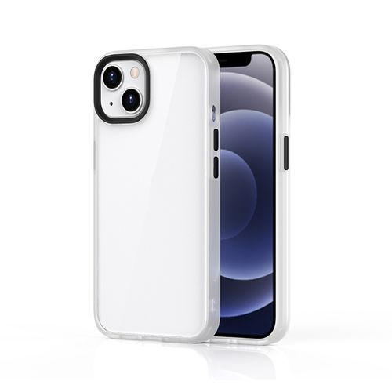

products

iPhone

macbook

wears
Main Camera
The 48MP Main camera is more advanced than ever,
capturing super‑high‑resolution photos with a new level of detail and color.
You’ll see the improvements in your portraits. And now you no longer have to switch to Portrait mode.
If your subject is a person, dog, or cat, iPhone automatically captures depth information.
So you can choose to instantly see your photo as a portrait, with an artful blur effect. Or later in the Photos app